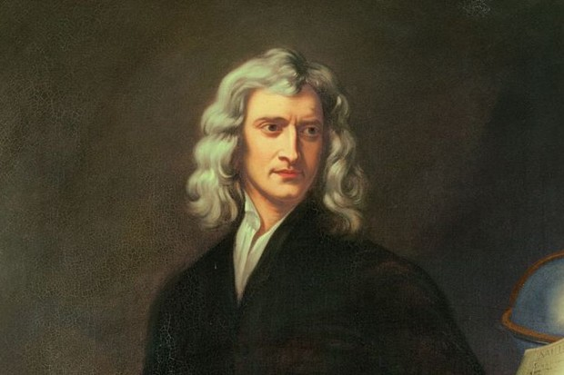

Isaac Newton
1642-1727 AD
Sir Isaac Newton PRS (25 December 1642 – 20 March 1726/27[a]) was an English mathematician, physicist, astronomer, theologian, and author (described in his own day as a "natural philosopher") who is widely recognised as one of the most influential scientists of all time and as a key figure in the scientific revolution. His book Philosophiæ Naturalis Principia Mathematica (Mathematical Principles of Natural Philosophy), first published in 1687, laid the foundations of classical mechanics. Newton also made seminal contributions to optics, and shares credit with Gottfried Wilhelm Leibniz for developing the infinitesimal calculus. see more...
Next
Stephen Hawking